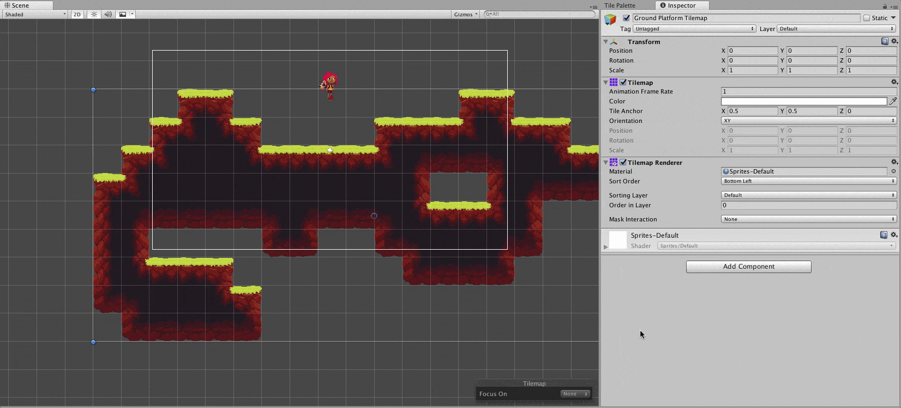

In-Game Tilemap System
In this page, we will focus on summarizing two popular tilemap frameworks that we can consider for our project.
Available Tilemap Frameworks
There are a couple of options you can choose when creating a tile-based 2D game in Unity. All frameworks have their strengths and weaknesses that the developers should consider and commit to that framework to allow the core mechanics to have a consistent performance.
Unity 2D Tilemap

Unity 2D Tilemap is a tilemap component that Unity offers within their engine. Because it is part of the engine, this framework is highly compatible with most components and other tools within the Unity ecosystem. Plus, it is very flexible when it comes to adding custom features. You can learn more about extending the Unity 2D Tilemap framework from this GitHub repository.
Despite the strong support that Unity 2D Tilemap receives from both Unity and the community (hey, that rhymed!), there are limitations that the developer should consider before fully committing to it. One such limitation is with the in-engine editor, as it lacks a lot of tile selection tools and built-in brushes. Another limitation is how complicated the custom brush implementation is alongside the difficulty of extending the existing tilemap framework itself.
Pros:
- Highly compatible with the base engine and other assets
- Ability to create custom brushes and tile logics
- Easy composite collider
- Great documentation
- Great support from the community
- Completely free
Cons:
- Difficult to extend the core tilemap component
- Difficult to create usable custom brushes
- All tiles are saved as a separate prefab in the project (hard to migrate)
- Lack of effective custom tile property injection
Helpful resources:
Super Tilemap Editor

Super Tilemap Editor is a 3rd-party Unity asset that can be bought from the Unity Asset Store for $45. This asset (or plug-in) allows you to create and use 2D tilemap in your game scene. The tile system is based on the position within the specified atlas image, whereas Unity will create a prefab for each individual tiles from a sprite image. Overall, Super Tilemap Editor is a robust package that offers easy in-engine map editing tools. Thanks to the fact that the source code is available to the developer, you can extend and change the plugin from its core.
However, Super Tilemap Editor has trouble with importing TMX (Tiled Map Editor XML) files despite it claims to provide full support for it. In addition to that, Super Tilemap Editor lacks in proper documentation or community support compared to that of Unity Tilemap.
Pros:
- Highly expandable
- Optimized tiling system
- Robust editing tools
- Supports tile metadata and custom properties
- Easy to use
- Can export tilemaps as prefabs
Cons:
- Not free
- Lacks in documentation
- Community size is small compared to Unity Tilemap
- Issue with importing from TMX files
Helpful Resources: